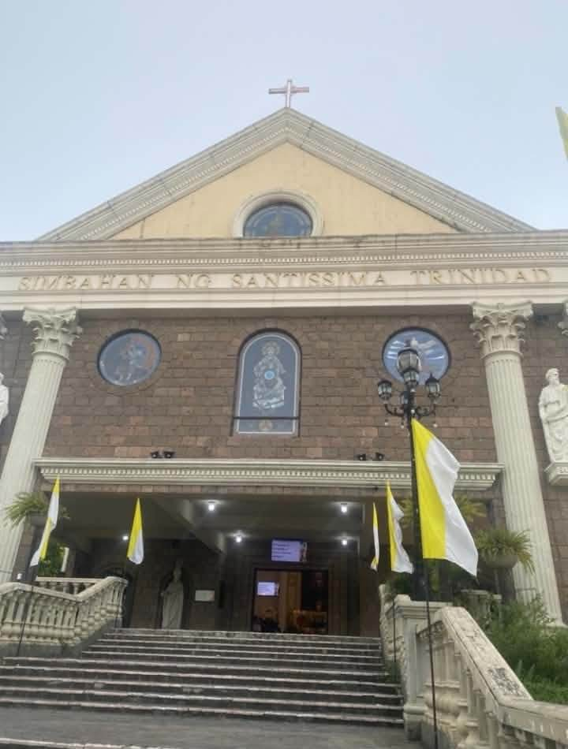

Archdiocese of Lipa · Pallocan West, Batangas City
Parish of the Most Holy Trinity,
Shrine of the Glorious Cross
Simbahan ng Santisima Trinidad: The Spiritual Home of Catholic Families in 24 Barangays of Batangas City since November 12, 2007.
Welcome to our parish family
The Parish of the Most Holy Trinity was established on November 12, 2007 and is the spiritual home of Catholic families in 24 barangays of Batangas City, under the Archdiocese of Lipa. Our church stands in Pastor Village, Pallocan West.
Whether you have lived here all your life or just moved in, you are welcome at our altar. Join us for Mass, ask about the sacraments, or find a ministry that fits your gifts.
About our parish
Parish history
The Parish of the Most Holy Trinity was established on November 12, 2007, in Pallocan West, Batangas City, under the Archdiocese of Lipa. It is the spiritual home of Catholic families in 24 barangays of Batangas City, and its church is also the Shrine of the Glorious Cross.
The dream of a new parish
Part of the dream of the then Archbishop of Lipa, Most Rev. Gaudencio Rosales, was to see another Parish at the eastern side of the Calumpang River as he saw the difficulty of the parishioners in attending church activities as there was no bridge near the Basilica from Pallocan West. Aside from it, was the increasing volume of churchgoers during Sundays and special celebrations at the Church. He echoed this to Msgr. Rafael Oriondo, the Parish Priest of the Basilica of the Immaculate Conception. Where will the new church be constructed?
Following the tradition of sharing their blessings, Dona Manuela Quinio Pastor donated 6,000 square meters of land located at Pastor Village, Pallocan West, Batangas City last May 14, 1996 thru Atty. Antonio A. Pastor. It was decided that if a new parish church will be constructed, then this will be used for that purpose. After the 2000 Centennial celebrations, the idea of creating another Parish intensified.
Preparing the new parish
When the decision was finalized to create another new parish, Most Rev. Ramon Arguelles STL D.D., Archbishop of Lipa, designated Fr. Ildefonso Dimaano as the priest-in-charge in preparing the new parish. Immediately two committees were organized: the Fund-Raising Committee, in-charge of the construction of the church and the Evangelization Committee, in-charge of preparing the would-be parishioners.
The Fund-Raising Committee was headed by Atty. Antonio Pastor with Dr. Libio Macatangay, Engr. Rey Arceo, Mrs. Sonia Mayo and Bro. Loreto Guinhawa as members. The committee decided to raise a seed money of P1,000,000.00 for the construction. It was agreed that to raise the first 1 million, 200 mahogany trees will be offered for a donation of Five Thousand (P5,000.00) pesos per tree. In a short period of six months the initial fund was realized.
A Speakers’ Bureau w as organized, composed of catechists, teachers, volunteers and headed by Bro. Felipe Arroyo, was tasked of reaching out to the barangays which will be part of the new parish. Their mission was to explain why there’s a need to establish another parish and what their roles and responsibilities would be.
Building the church
The ground-breaking ceremony was held last May 21, 2005, led by the then Archbishop of Lipa, Most Rev. Ramon C. Arguelles. During the Feast of the Nativity of the Blessed Virgin Mary, September 8, 2006, the construction started and was finished in less than a year due to the availability of funds, out of the generosity of the Pastor family. During that period SM was in need of a big parking area and they bought the land between SM and the site of proposed church. Out of the sale proceeds, a loan in the amount of Forty-six Million Two Hundred Fifty Thousand (P46,250,000.00) pesos was extended by the Pastor Quinio Family Memorial Foundation, Inc. in favor of the Roman Catholic Archbishop of Lipa by virtue of the September 18, 2007 Memorandum of Agreement, to cover the construction costs. However, the loan was subsequently reduced to Forty-Three Million, Two Hundred Fifty Thousand (P43,250,000.00) pesos, as a result of the Three Million (P3,000,000.00) pesos donation made by the Pastor Family under a Deed of donation dated August 19, 2008. The loan was free of interest.
A personal loan of Twenty-five Million, One Hundred Eighty-Nine Thousand, Five Hundred Sixty-five (P25,189,565.00) was extended by Atty. Tonying Pastor for the change order works and the construction of the ossuary, also free of interest.
The Chapel of the Lights, the belfry and the Gusaling Pulungan were all donated by the Pastor Family.
It was Architect Noli M. Bernardo of Quezon City, who prepared the design of the Church while the whole altar was drawn by Rev. Fr. Alex Bautista from the Diocese of Tarlac. The whole church was constructed by DDT Konstract under the supervision of Mr. Danilo D. Tamayo.
Fr. Ilde Dimaano supervised the construction from the beginning to the end, thanks to the assistance of the Construction Committee, composed of Atty. Antonio Pastor, Dr. Luis Pastor, Architect Noli Bernardo, and Engr. Jess Marquez. The church included the Chapel of the Light, the Chapel of the Blessed Sacrament, the Chapel of the Resurreccion, and the Chapel of Sorrows. All the structures and facilities were completed in less than a year. It was made possible through the generous help of benefactors and the thousands of parishioners from the different barangays of the Parish of the Most Holy Trinity.
Our first priests
Rev. Fr. Ildefonso T. Dimaano (2007 – 2010) was its first parish priest. The Parochial Vicars were Rev. Fr. Magno Casala, Rev. Fr. Darwin A. de Leon, Rev. Fr. Jason N. Alcaraz.
Stewardship and parish life
The formation modules on “stewardship” (Bente Ko Kada Linggo, Adobeng Bato ng Santatlo Campaign) became the cornerstone of most of the parishioners’ involvement relative not only to the financial aid to the construction but also to the numerous pastoral activities of the parish since its canonical erection in November 2007. A “steward’s passbook” was designed where donations were recorded. Every time donations are remitted to the office; the office staff stamped the passbook indicating the amount of weekly or monthly donations. This activity of encouraging people to get involved was brought to the nearby parishes like, the Basilica, St. Mary Euphrasia and Sta. Rita. On Sundays, a booth is set up at the patio for the collection of donations for Bente ko kada Linggo while I do the explanation of the mechanics inside the Church, before the blessing in every Sunday Mass.
One big accomplishment of the parish was the promotion of more male involvement in the church. They were able to organize an association composed mainly of males from the Barangays which were called the “Katiwala ni San Jose”, the first church organization that was tasked to take care of the Archdiocesan Glorious Cross and the very active participation of the youth, “Barkadahang Santissima Trinidad” (BST). The Confraternity of Christian Doctrine was likewise given special attention. There were more than 60 volunteer catechists and 20 in-house catechists (public school teachers). The devotion to the Divine Mercy followed and the Home Evangelization was started.
Vision
“Isang Sambayanang
Nagsasabuhay ng Pananampalataya
at Nagkakaisa sa Paglilingkod
Tungo sa Pag-unlad ng Sarili, Pamilya at Komunidad
sa Pamamatnubay ng Santissima Trinidad.”
Goals
Our parish goals will be posted here soon.
Parish announcements
- Parish noticeBaptism schedule
Pakipasa po ang kumpletong requirements (photocopy) dalawang linggo bago ang araw ng binyag para sa schedule ng inyong seminar.
- Parish noticeParish anniversary
We celebrate the founding of our parish on November 12. Details will be announced by the parish office.
Upcoming activities and events
Mark your calendar. The parish office will announce times and details for each celebration.
- Nov 12Thursday
Parish anniversary
We give thanks for the founding of our parish on November 12, 2007.
- Nov 22Sunday
Solemnity of Christ the King
The last Sunday of the liturgical year.
- Nov 29Sunday
First Sunday of Advent
The season of preparation for Christmas begins.
- Dec 8Tuesday
Solemnity of the Immaculate Conception
A holy day of obligation. Mass times will be announced.
- Dec 16to Dec 24
Simbang Gabi
Nine days of dawn Masses before Christmas.
- Dec 24and Dec 25
Christmas Eve and Christmas Day Masses
Join us as we celebrate the birth of Our Lord.
Updates and other parish activities are also posted on our Facebook page and YouTube channel.
Mass and sacraments
Times for regular parish services. Please check with the parish office for feast days and holy week changes.
Holy Mass
- Sunday
- 6:00 AM
7:30 AM (Mass for the People)
9:00 AM
10:30 AM
4:30 PM
6:00 PM - Saturday
- 6:00 AM
7:00 AM
6:00 PM (Anticipated Mass) - Monday to Friday
- 6:00 AM
7:00 AM
6:00 PM
Confession
- Schedule
- Ask the parish office
- Call
- (043) 773-3988
Baptism, wedding and more
- Baptism
- Wed, Sat, Sun, 9:30 AM
- Wedding
- Ask the parish office
- Blessings, funeral Mass
- Parish office
Mass intentions
Mass intentions are arranged at the parish office. Call (043) 773-3988 or 0956-029-3744, send us an inquiry in the Contact section, or request a Mass on the Apply Online page.
See the Apply Online page for sacrament requirements and submission.
Shrine of the Glorious Cross
Our parish church also serves as the Shrine of the Glorious Cross, a place for pilgrims and parishioners to pray before the cross of Christ.
Our parish seal carries the Shield of the Trinity: Father, Son and Holy Spirit are each God, and none is the other. A cross, crossed arrows and two lilies sit above it.
- Parish nameMost Holy Trinity
- EstablishedNovember 12, 2007
- ArchdioceseLipa
- ShrineGlorious Cross
Ways to serve
Every parishioner has a part in the life of the parish. Ask the parish office how to join.
Lectors and commentators
Proclaim the Word at Mass.
Altar servers
Serve at the altar during liturgy.
Choir
Lead the assembly in sung prayer.
Eucharistic ministers
Bring Holy Communion to the church and the sick.
Youth ministry
Faith formation and fellowship for young people.
Catechesis
Teach the faith to children and adults.
Priest and staff directory
The priests who serve our parish. To reach the parish office, call (043) 773-3988.
Rev. Fr. Rogelio Maynardo T. Beredo, Jr.
Parish Priest
Rev. Fr. Mar Andreen J. Castillo
Parochial Vicar
Rev. Fr. Roy Jose C. Reyes
Parochial Vicar
Parish Office
0956-029-3744
(043) 773-3988
mhtpbatangas@gmail.com
Photo gallery
More photos from parish celebrations will be added soon.

Apply online
Check the requirements and submit your documents online. The parish office will review them and contact you.
Frequently asked questions
What time are the Masses?
Monday to Friday: 6:00 AM, 7:00 AM, 6:00 PM. Saturday: 6:00 AM, 7:00 AM, and 6:00 PM (Anticipated Mass). Sunday: 6:00 AM, 7:30 AM (Mass for the People), 9:00 AM, 10:30 AM, 4:30 PM, 6:00 PM.
When are baptisms held?
Baptisms are held on Wednesday, Saturday and Sunday at 9:30 AM. Please submit photocopies of the complete requirements two weeks before the baptism so we can schedule your seminar.
What are the requirements for baptism and confirmation?
See the Apply Online page for the full requirements and online submission.
Who can be Ninong and Ninang?
One couple only. If married in the Catholic Church, bring a Marriage Certificate. If civilly married or single, bring a Kumpil Certificate.
How do I request a Mass intention?
Contact the parish office at (043) 773-3988 or 0956-029-3744, or use the inquiry form in the Contact section.
Where is the parish?
Pastor Village, Pallocan West, Batangas City. Use the map button in the Contact section for directions.
Visit us
Parish of the Most Holy Trinity,Shrine of the Glorious Cross
Pastor Village, Pallocan West
Batangas City, Batangas
Archdiocese of Lipa
Find us
Parish office
Ask about Mass intentions, certificates, sacrament requirements and blessings.
Mobile: 0956-029-3744
Landline: (043) 773-3988
Email: mhtpbatangas@gmail.com
Facebook: Parish of the Most Holy Trinity - Archdiocese of Lipa
YouTube: Watch our parish videos
Mass intentions
Arranged at the parish office. See the Schedule section for details.